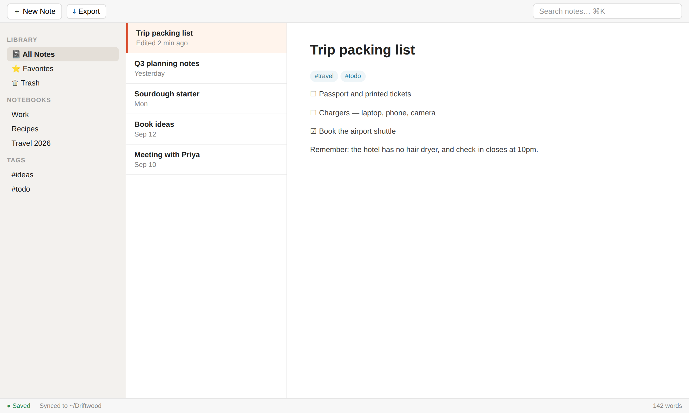

Get more out of Driftwood
A fictional notes app, used to preview every element in the course design system — light and dark.
Meet Driftwood
What the app is for, and a guided tour of the main window.
Your notes, as plain files you own
Driftwood stores every note as a Markdown file in a folder on your computer. The app is a fast, friendly window onto that folder.
Notebooks
Folders for grouping notes — like drawers in a filing cabinet.
Tags
Labels that cut across notebooks. One note can wear many.
Quick search
Find any note by a word in it, in under a second.
A tour of the main window

What happens when you click New Note
- Select the Travel 2026 notebook
- Click
- Type a title and press Enter
- The notebook becomes the destination folder
- A file named
untitled.mdappears in it - The file is renamed to match your title
Because notes are real files, you can back them up, sync them or open them in another editor — Driftwood never holds them hostage.
You want your notes on a second laptop. What's the simplest route?
From idea to exported PDF
The core workflow, end to end.
Four steps
Press CtrlN anywhere in the app.
Type #travel anywhere in the text — it becomes a tag instantly.
Toggle the preview with CtrlE.
Choose
Watch an export happen
The panels, in their own words
Drag each feature onto the job it does best — or tap a feature, then tap a job.
Keep work and personal notes apart
Mark everything that still needs doing, across all projects
Find the note that mentioned "sourdough"
Work faster, fix problems
Shortcuts, settings worth changing, and what the error messages mean.
Five shortcuts that pay for themselves
Keys adapt to your platform — try the switch in the top bar.
Where your notes live
By default: ~/Documents/Driftwood. Reveal it with .
By default: %USERPROFILE%\Documents\Driftwood. Reveal it with .
By default: ~/Driftwood. Reveal it with .
Settings worth changing
How long Driftwood waits after you stop typing before saving. Lower it if you're on a flaky laptop battery.
Follows your OS language unless set. Set it explicitly if you write in a second language.
When something goes wrong
What it means
Your computer refused to let Driftwood write to the library folder — usually because the folder was moved into a protected location.How to fix it
Choose and pick a folder inside your Documents.What it means
Another app (or a sync tool) edited the file while it was open here.How to fix it
Click Reload to take the newer version. Your in-app edits are kept in .Spot the mistake: Sam wants their notes on a new laptop
Install Driftwood on the new laptopDelete the library folder from the old laptopCopy the library folder to a USB stickOn the new laptop: Settings › Library › Change… and pick the copied folderPower move: open a note from the command line
$ driftwood open "Trip packing list" Opened in existing window.
Every feature, plus the developer kit
A searchable feature map, then the elements used by library-mode courses.
Feature map
#tag in any note — Module 1Library mode: code ↔ English
const doc = await driftwood.open("notes/trip.md");
const pdf = await doc.export("pdf", { theme: "paper" });
await fs.writeFile("trip.pdf", pdf);Load a note from disk and wait until it's ready.
Render it to PDF using the "paper" theme — the same one the app uses.
Save the resulting bytes as a file.
Renders the document in the requested format. Throws ExportError if the note contains an image that can't be read.
| Parameter | Description |
|---|---|
| format | Output type. Only these two values are accepted. |
| options.themeoptional | Theme name. Defaults to "paper". |
ReturnsThe file contents as bytes.
doc.export("pdf"); // forgot awaitYou get a Promise, not the bytes — the file will be empty.
await doc.export("pdf");Wait for the render to finish before using the result.
export const AUTOSAVE_MS = 800;
export const MAX_ATTACHMENT_MB = 25;Other building blocks
Type
Pause 0.8s
Saved to disk
Apple silicon and Intel
Installer or portable .zip
--safe-modeStarts without plugins — use when the app crashes on launchEmptying the Trash is permanent — the files are deleted from disk.
Pin your most-used notebook with a right-click.